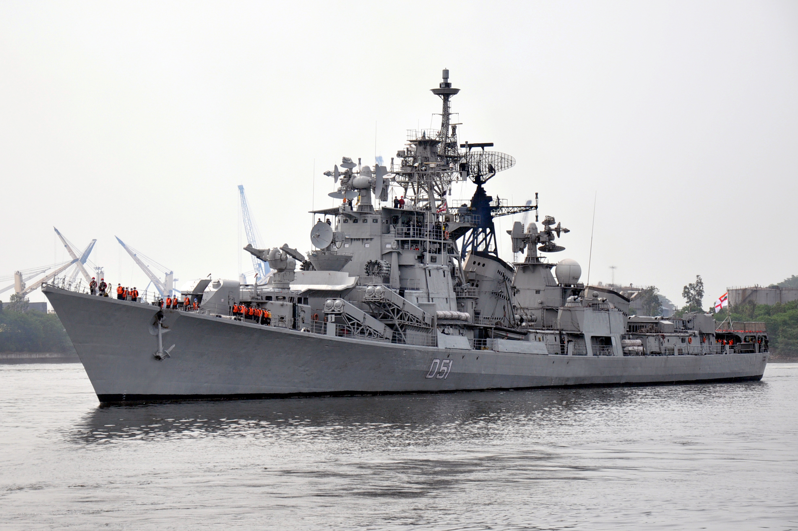

Service History
- Entry into service :
INS Rajput was commissioned into the Indian Navy on May 4, 1980. It was the first of the Rajput-class destroyers,
which were based on the Soviet Project 61E (Kanin-class) but were extensively modified and upgraded with Indian systems.
- Retirement :
After more than three decades of service, INS Rajput was decommissioned on May 21, 2021, marking the end of an era for
the Rajput-class destroyers in the Indian Navy.
Technical Specifications
- Displacement : Approximately 4,000 tons (full load).
- Dimensions : Length: 146 meters; Beam: 14 meters; Draught: 5.4 meters.
- Propulsion : Powered by 2 gas turbines (M36E and M53E), which produced a combined output of 80,000 horsepower.
- Speed : Capable of reaching speeds up to 32 knots (59 km/h).
- Armament :
- Main Guns: 1 x 130mm AK-130 dual-barrel gun mount.
- Missiles: Equipped with surface-to-air missiles (SAM) Shtil, surface-to-surface missiles (Kh-35 Uran), and a range of anti-submarine warfare (ASW) weapons.
- Torpedo Tubes: 2 x 533mm torpedo tubes for engaging underwater threats.
- Close-in Weapon System: AK-630 CIWS for defense against air threats and missiles.
- Sensors and Sonar :
- Snoop (Sonar System) for anti-submarine operations.
- MR-760 Fregat-M2EM radar for air and surface search.
- Notable Feature : INS Rajput was notable for its high level of indigenous modifications and upgrades, incorporating Indian-made sensors, radar, and weaponry,
making it a truly versatile and modern warship for its time.
- Range : Operational range of around 5,000 nautical miles at a cruising speed of 18 knots.
- Crew : Approximately 350-400 personnel, including officers and sailors.
Historical Significance
INS Rajput was one of the most advanced warships in the Indian Navy at the time of its commissioning and became a
symbol of India’s growing naval capabilities. It was the first of its class and served as a powerful deterrent
against maritime threats in the Indian Ocean region. Rajput’s service reflected India’s ambitions to strengthen
its maritime defense and project power across the region.
Notable Missions
- Kargil War (1999): INS Rajput played a significant role in the naval blockade of Pakistan and provided air defense for the Indian Army, ensuring the safety of vital coastal and strategic assets.
Its presence demonstrated India's naval readiness and strategic foresight during the conflict.
- Operation Talwar (2001-2002): During the India-Pakistan standoff, Rajput was deployed to safeguard the western seaboard, ensuring maritime security and preventing any potential escalation of hostilities.
- Peacekeeping and Humanitarian Missions: INS Rajput also supported various peacekeeping missions and was involved in delivering humanitarian aid to countries in need during natural disasters, further exemplifying its versatility beyond combat roles.
- Naval Exercises:As part of India’s strategic engagements, Rajput participated in numerous international naval exercises, strengthening bilateral ties with navies from the U.S., Russia, Japan, and other countries.